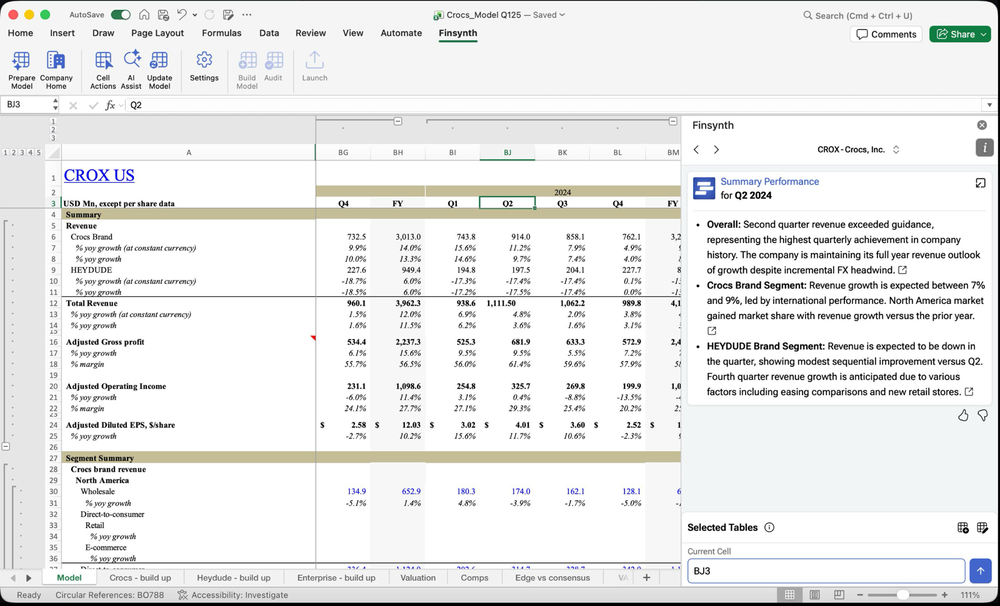
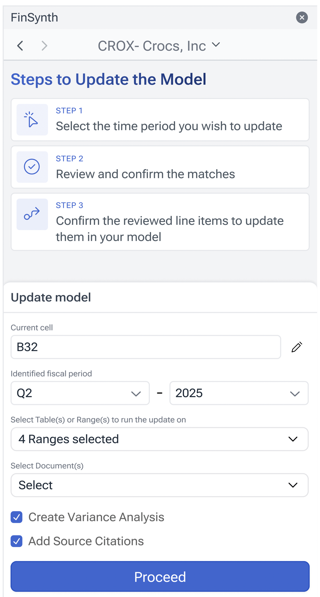
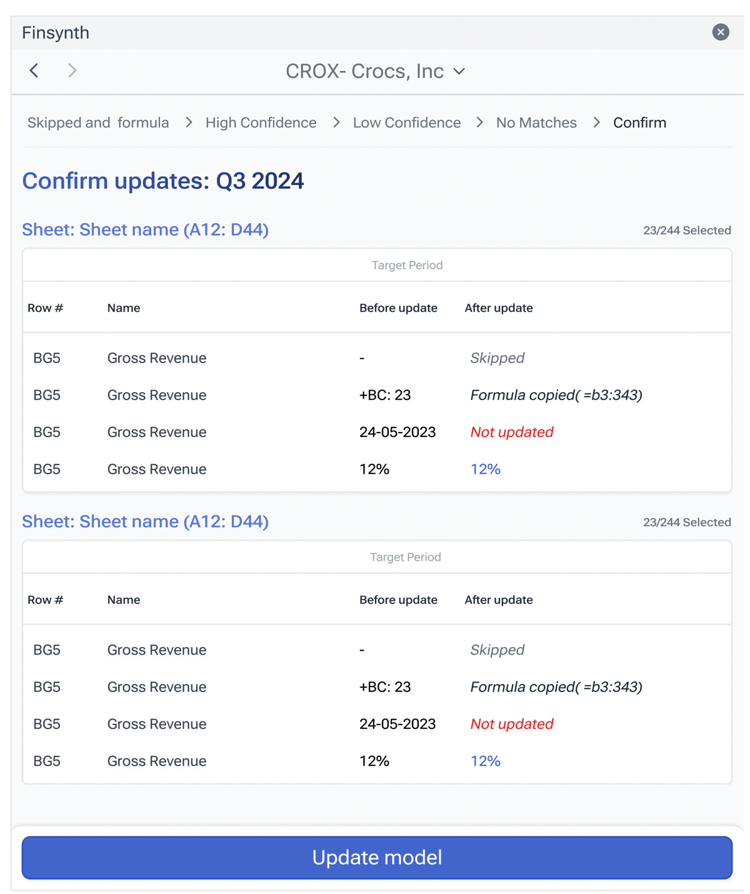

FinSynth AI
Turning financial research into model‑ready work.
FinSynth helps public-equity analysts research companies, investigate financial questions, and bring the answer back into the model.

- Role
- Founding Product Designer
- Timeline
- April 2026 – Present
- Platform
- Web + Excel
- Team
-
- Ritika ShakkerwalFounding Product Designer
- Two backend engineers
- One frontend engineer
- Founders
The spreadsheet isn’t where analysts work. It’s what they deliver.
The work this has to survive
An analyst isn’t buying an answer. They’re buying an answer they can defend.
An answer you can’t trace back isn’t a productivity gain. In this job it’s a liability.
It’s exactly the kind of work you’d hand to an AI. So why don’t analysts just use ChatGPT?
They can. Some do.
But that answer has to survive being questioned — by a portfolio manager, by an investment committee, by compliance. Copy a number out of a chat window into a model and the trail back to where it came from is gone.
So the AI had to come to the model, not the other way around.
They don’t arrive one at a time
Research, analysis, model upkeep, validation — and the doubt running under all of it — land together, for every name on the list.
The loop is the tidy version.
- Why did gross margin step down in Q3?
- One-off, or the new run rate?
- Which filing has the segment split?
- Did guidance change, or just the tone on the call?
- The 10‑K dropped — what breaks in the model?
- Did the share count restate?
- Does the model still tie to the filing?
- Where did this number come from?
- Can I defend this to the PM tomorrow?
- If this assumption moves, what else moves?
- Earnings week — all 40 report at once.
- There has to be a better way.
A real day doesn’t queue its problems — they land together, and they interrupt each other.
Three threads run through every note on that wall. Uncertainty about what’s actually being asked. The cost of being wrong on work that carries your name. And a live model that moves when you touch it. Keep hold of those three — the second half of this case study is what each one turned into.
FinSynth already solved parts of the analyst’s job.
Before the agent, analysts could use predefined workflows to find information, compare companies, and update their models.

-
01AI AssistFind information across filings.

-
02Trend AnalysisCompare companies and trends.

-
03Model UpdateBring changes into the model.

The catch: each workflow started with a problem the analyst already knew how to define.
That was the ceiling of the old interaction model.
Where the workflows stopped
Predefined workflows worked on one condition: the need already matched one.
-
01 — Know what you need
“Update Apple’s EPS”
-
02 — Find the workflow
AI Assist Trend Analysis Model Update
-
03 — Run the workflow

-
04 — Get the output

All three workflows ran on the same contract. You already knew what you wanted. You found the workflow that did it. You ran it. You got the output.
An analyst whose need fit that strip got a good answer. An analyst whose need didn’t got nothing, and there was no way to say here’s what I’m trying to do — work out how to help me.
It couldn’t discover a problem the user was having.
The product’s capability was the set of workflows somebody had already thought to design.
- Know what you need
- Choose workflow
- Run
- Output
What if the product figured out the workflow?
- Describe the goal
- FIA determines the steps
- Tools
- Output
The product stopped waiting to be told which workflow to run.
The routing changed hands
From finding the right workflow to stating the goal.
Then you described what you were trying to do, and it worked out the steps.
The product stopped waiting to be told which workflow to run.
Not a fourth workflow. An agent.
FIA chooses its own steps, uses tools, produces work — and what it produces can land in a live model.
FIA is FinSynth’s research agent. It isn’t another workflow alongside the first three — it’s a different kind of product. Given a goal, it decides which steps to take. It calls tools and reads what comes back. It produces work — an answer, a table, a set of changes — and that work can reach a live financial model, the artifact the analyst’s name is on.
Every ability that removes the ceiling is a new way for the product to be wrong somewhere the analyst can’t see.
That put the hard questions somewhere the old product never had them — before the work starts, and while it runs.
The anatomy set the boundaries
What the system actually is, what that constrains, and the three places a person can step in.
I was designing this without a PM or a design team, directly with the founders and the engineers. Engineering made the AI reliable. My job was making the reliability usable: deciding what the agent should do, how it should show its work, and when to put a human in the loop.
- The agent decides the steps. The analyst no longer does the routing, so they can no longer predict what will run.
- Tools return structured events. A factual record of what actually happened exists, if the interface chooses to use it.
- Writes can reach a live model. A wrong step doesn’t stay inside the product.
- So the analyst needs places to inspect, correct, or stop the work — not one safety screen at the end, a checkpoint at every seam.
With an agent, the design job has a precise shape — because the system does.
The three decisions that follow are those checkpoints.
What is the agent actually being asked to do?
A goal arrives the way people talk. How has marketing spend trended? — for which company? Over what period? Trended against what?
The old workflows never had this problem, because a form can’t be ambiguous. Free text can, and with an agent an ambiguous ask doesn’t fail — it runs, and comes back with confident work about the wrong thing.
Edit Query is the seam between the analyst’s words and the agent’s instruction. It’s the cheapest checkpoint in the system: the wrong question, caught before any work exists to be undone.
How do you turn a raw capability into something a person can rely on?
An agent may know the steps. The analyst still needs to see and shape them.
I’d been watching how Claude handled the same shape of problem.
It plans before it acts. You can push back before anything happens.
In a chat window that’s a nice touch.
In a spreadsheet I wasn’t convinced.
The cost of changing your mind is completely different.
A revise flow keeps you asking. An editable plan lets you correct.
I decided it had to be built that way — regeneration would have destroyed the cheapness the planning step existed to create.
The product still has no revise concept anywhere in it. A plan can be edited, executed, or discarded.
Where does trust live — in the answer, or in the product?
Edit Query fixed the ask. The plan fixed the moment before the work. Then the work ran.
And the analyst was now watching a system make a sequence of choices they hadn’t chosen.
The easy version of AI trust is conversational. The model tells you how confident it is, apologises when it’s wrong, explains itself in a paragraph. None of that survives contact with someone who has to defend the number.
The agent was doing everything right. Nobody could tell.
Ask the model to describe each tool before it calls it. One prompt, it reads well, and it could have shipped that week.
Then: you’d be asking it to describe an action before anyone — including the model — knows what that action is going to be.
A guess dressed as a status update, inside a product whose entire argument is that you can check its work.
So I went the other way. I took what the backend was already sending, sat with it, and worked out the pattern in the fields — a name in there, something displayable, something that might actually be useful to the person watching.
What the analyst reads is never generated. It’s derived from what actually happened.
Thinking…
Checking workbook for errors…
- Opened Airbus 2024.xlsx · 4 sheets
- Read Model!A1:J75
- Failed to read Airbus 20-F · filing not available
- Read Q4 Earnings · 10Q
- Wrote 12 cells to Dashboard
- Checking Model!A1:J75 for errors
Checked Model!A1:J75 for errors · 3 found
The number still has to be defended. What changed is what you can hold up when it is — a plan you corrected before the work started, and a line that says what actually happened when it ran.
FinSynth is in pilot. There’s no adoption curve to show you yet.
What has already changed is the product’s contract with the analyst. They no longer have to begin by knowing the correct workflow. They state an objective — and at every point where the agent could go wrong, the question it heard, the plan it drew, the tools it ran, there is a place to inspect it, correct it, or stop it.
On day one you had to already know what you wanted. Now the product asks what you’re trying to do.